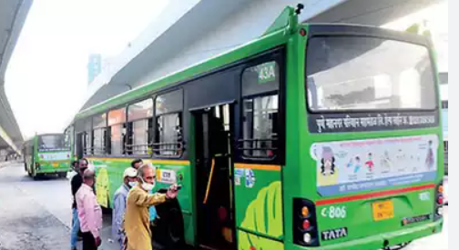
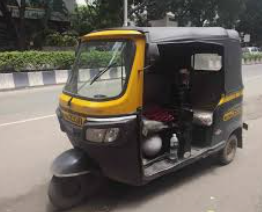
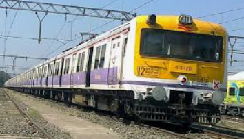
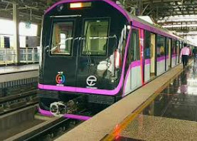
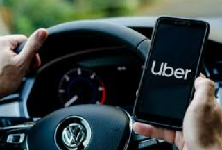

As of my last knowledge update in September 2021, Pune, a city in India, had a fairly extensive public transport system that included buses, auto-rickshaws, and local trains. Here are some key points about the public transport system in Pune as of that time:
The Pune Mahanagar Parivahan Mahamandal Limited (PMPML) operates a large fleet of buses that cover various routes within the city as well as some routes connecting Pune to its neighboring areas. These buses are a popular mode of public transportation for many residents.
Auto-rickshaws are a common sight in Pune and are widely used for short-distance travel within the city. They are convenient for getting around and are a popular choice for many commuters.
Pune is also served by local trains that connect the city to its suburbs and neighboring towns like Lonavala. Local trains are generally used by commuters traveling to and from these areas for work or other purposes.
As of my last update, the Pune Metro project was under construction. The Pune Metro is expected to provide a modern and efficient mode of transportation once it becomes operational, with plans for multiple lines to connect different parts of the city.
Services like Uber and Ola are also popular in Pune, providing an additional option for residents and visitors to travel around the city conveniently.
This link will take you to pune's colleges/Universities page
Colleges in Pune